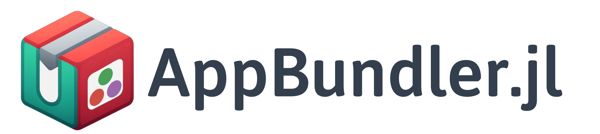

AppBundler.jl



AppBundler.jl is a Julia package for building native installers — Snap, MSIX, and DMG — using open-source tools available across all UNIX platforms (Linux, macOS, FreeBSD), while also being able to build MSIX on Windows itself. It replaces host system packaging utilities with cross-compiled tools distributed through Julia's Yggdrasil registry, resulting in a consistent and reproducible pipeline with no per-platform build environments required.
The package provides a clean API for bundling any Julia application exposing @main, with support for icons, configuration files, and native customization. GitHub Actions workflows allow multi-platform installer builds to be triggered with a single click, making continuous delivery of native installers practical for open-source Julia projects. AppBundler can also bundle applications written in other build systems (see docs).
Showcase
The following videos demonstrate the DMG and MSIX installers produced via AppBundler.
 |  |
|---|---|
| DMG | MSIX |
Note: The bundling API has evolved since these videos were recorded, but the pipeline structure and the resulting installers look just the same.
Quickstart
If your Julia application exposes @main and can be launched with julia --project=. -m MyApp, it's ready to bundle. Here's how to get from source to a native installer in a few steps.
1. Install AppBundler
]app add AppBundlerMake sure ~/.julia/bin is on your PATH after installation.
2. Build your installer
From your project directory, run:
appbundler build . --build-dir=build --selfsignThis detects your current platform and builds the appropriate installer — no extra configuration needed to get started.
3. Find your installer
Your installer will be in the build/ directory, ready to distribute. AppBundler detects your current platform and produces the corresponding installer:
build/MyApp.msixon Windowsbuild/MyApp.snapon Linuxbuild/MyApp.dmgon macOS
To build for all three platforms at once, check out the included GitHub Actions workflow templates — they run each platform's build in parallel with a single push.
Compilation & Customization
AppBundler offers a lot of room to grow as your project matures:
- Package images — faster startup via precompiled pkgimages
- Sysimage — even faster startup with a bundled system image
- JuliaC — native compilation (including the new
--trimfeature) for smaller installers - Sandboxing, terminal visibility, icons, and more — full control over how your app looks and behaves on each platform
AppBundler can also bundle applications written in other build systems, and can build full Julia distributions — as demonstrated by Jumbo Julia.
➡️ See the full documentation for all options and platform-specific configuration.
Supported GUI Frameworks
These frameworks have been tested with AppBundler. Minimal example applications for each are available in the examples folder — copy them straight from pkgdir(AppBundler) once installed.
| Framework | Platform Support | Notes | Examples |
|---|---|---|---|
| QML | ✓ All platforms | Fully supported | PeaceFounderClient |
| GLFW | ✓ All platforms | Fully supported | — |
| Electron | ✓ All platforms | Fully supported | BonitoBook |
| Gtk/Mousetrap | ⚠ macOS, Linux | Does not launch on Windows | — |
| Makie | ⚠ All platforms | GLMakie may not work on Windows | ImageColorThresholderApp |
| Blink | ⚠ All platforms | Requires heavy patching for relocatability | KomaMRI |
Installing Built Applications
Sharing your app with end users? Here's what they need to know.
- MSIX (Windows): For self-signed builds, open the MSIX properties and add the certificate to Trusted Root Certification Authorities first (step-by-step guide). Then double-click the installer.
- Snap (Linux): Install from the terminal:
snap install --classic --dangerous MyApp.snap - DMG (macOS): For self-signed builds, click the app, then go to Settings → Privacy & Security to approve the launch request. Drag it to Applications, launch it, and approve once more in Privacy & Security if prompted.
These extra steps are only needed for self-signed builds. Purchasing Windows and macOS code signing certificates eliminates them entirely. For Snap, submitting to the Snap Store enables one-click GUI installation.
Acknowledgments
This work is supported by the European Union through the Next Generation Internet initiative (NGI0 Entrust), via the NLnet Julia-AppBundler project.